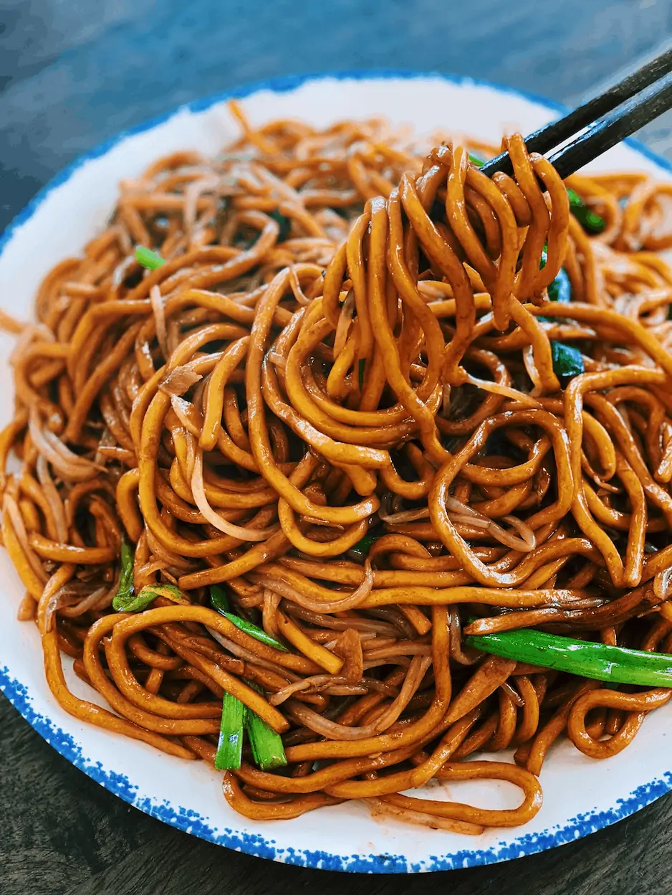

How to Make Noodles

Making Noodles can be time-consuming, but the results are well worth the wait. You'll find a detailed ingredient list and step-by-step instructions
in the recipe below, but let's go over the basics:
This noodle recipe is beloved for its bold flavors and versatility, making it easy to customize. Stick to the original recipe for an
unforgettable experience or tweak it to suit your preferences. Here's what you'll need:
- Noodles: Use your favorite type, such as spaghetti, ramen, udon, or rice noodles.
- Aromatics: Minced garlic (4 cloves) and grated ginger (1 teaspoon) create the base for the sauce.
- Oil: A combination of sesame oil for nuttiness and vegetable oil for cooking.
- Soy sauce and oyster sauce: Soy sauce (3 tablespoons) provides saltiness, while oyster sauce (1 tablespoon) adds depth (optional).
- Chili flakes: One tablespoon for heat, but feel free to adjust based on your spice tolerance.
- Sweetener: One tablespoon of honey or sugar balances the spice and acidity.
- Scallions: Freshly chopped (1/4 cup) for a burst of freshness and color.
- Optional toppings: Crushed peanuts, sesame seeds, or a squeeze of lime for extra flair.
- This recipe offers a balance of savory, spicy, and sweet flavors that’s perfect for a quick and satisfying meal.
How to Make Noodles Step-By-Step
Here's a very brief overview of what you can expect when you make homemade lasagna:
- Cook the noodles.
- Prepare the sauce
- Cook the aromatics
- Combine the ingredient
- Finish with scallons